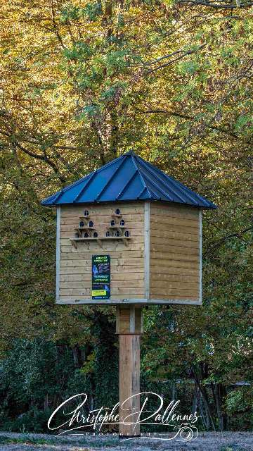
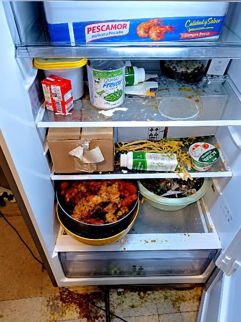
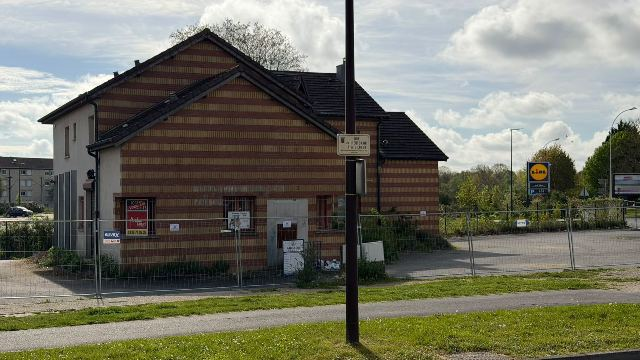
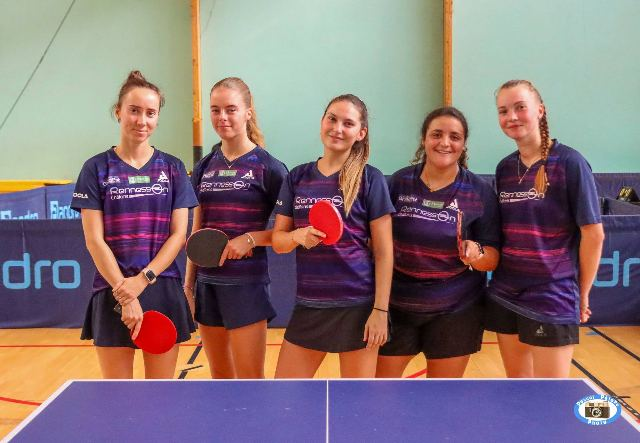
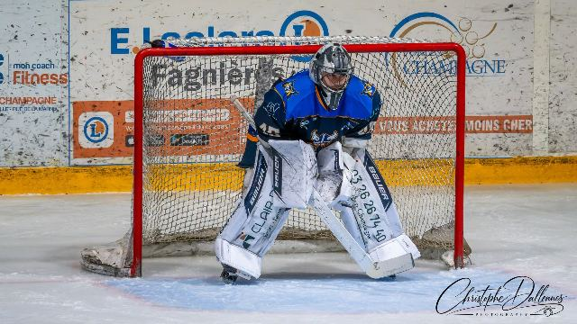

Toutes les actus
A LA GARE DE CHALONS-EN-CHAMPAGNE, LE TRAIN SE POURSUIT... A VELO !
Bonne nouvelle pour les voyageurs : la gare de Châlons-en-Champagne est désormais équipée d’une station Vélo Fluo Grand Est !

UN PIGEONNIER CONTRACEPTIF DESORMAIS INSTALLE SUR LE PARKING DES VIVIERS
Après la réalisation des fondations fin août, la maisonnette a été installée tout récemment .

FERMETURE ADMINISTRATIVE D’UN COMMERCE POUR MANQUEMENTS AUX RÈGLES D’HYGIÈNE
Le préfet de la Marne a ordonné la fermeture administrative immédiate de l’établissement JC EXOTIQUE

UN NOUVEAU LABORATOIRE BIOXA ATTENDU RIVE GAUCHE
L’ouverture est attendue pour février 2027.

UN DERBY HAUT EN COULEUR
Le Châlons-en-Champagne Tennis de Table (CCTT) recevait l’Olympique Rémois Tennis de Table (ORTT) pour ce derby marnais en Nationale 2 féminine.

UN DERBY INTENSE, DU SPECTACLE ET DES ÉMOTIONS !
Ce samedi soir, la patinoire Cité Glace de Châlons-en-Champagne a vibré au rythme d'un derby passionnant entre nos Gaulois du Hockey Club Châlonnais et les Phénix de Reims.
𝗦𝗮𝗹𝗼𝗻 𝗱𝗲𝘀 𝗔𝗿𝘁𝘀 𝗲𝘁 𝗱𝘂 𝗧𝗲𝗿𝗿𝗼𝗶𝗿
Rendez-vous incontournable de l’automne à Recy, le Salon des Arts et du Terroir revient ce week-end, les samedi 10 et dimanche 11 octobre 2026, à l’initiative du Comité des fêtes « Recy Vit ». De nom…
Une page suspendue… mais une passion intacte !
Derrière L'Objectif Châlonnais, il y a bien plus qu'une page Facebook. Il y a des années de passion, des milliers de photos, des centaines de reportages, des événements immortalisés, des rencontres i…